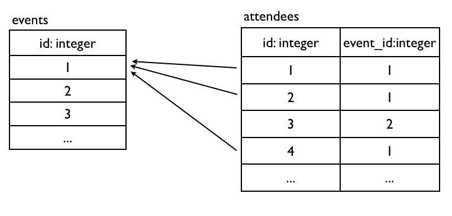
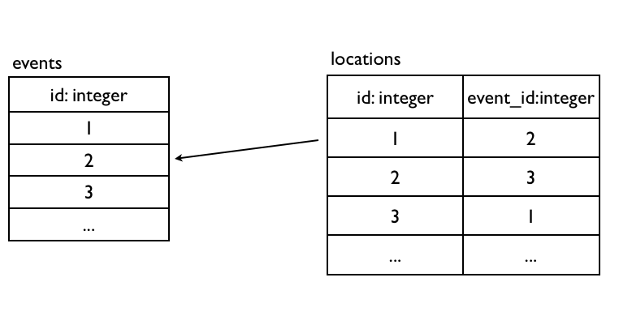
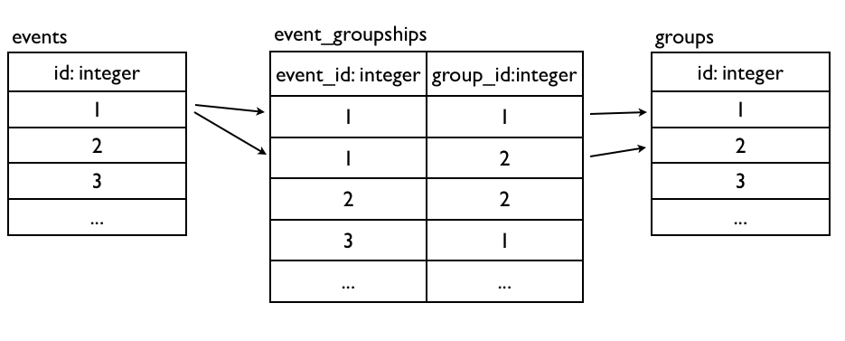
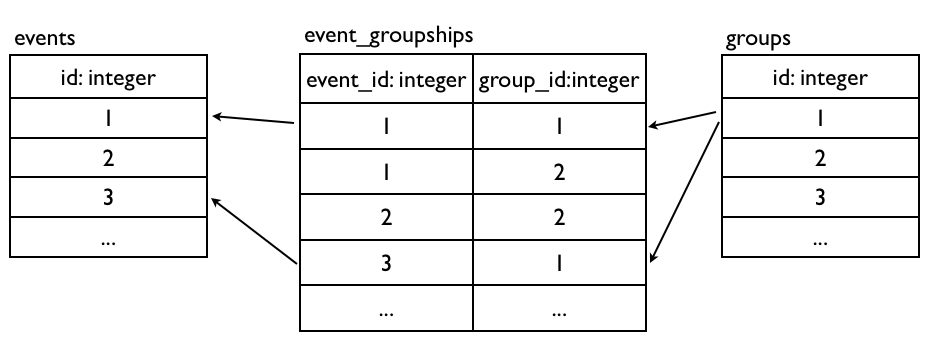

All problems in computer science can be solved by another level of indirection(abstraction) - David Wheeler …except for the problem of too many layers of indirection. - Kevlin Henney’s corollary
請注意本章內容銜接前兩章，請先完成前兩章內容。
ORM (Object-relational mapping ) 是一種對映設關聯式資料與物件資料的程式技術。物件導向和從數學理論發展出來的關聯式資料庫，有著顯著的區別，而 ORM 正是解決這個不匹配問題所產生的工具。它可以讓你使用物件導向語法來操作關聯式資料庫，非常容易使用、撰碼十分有效率，不需要撰寫繁瑣的SQL語法，同時也增加了程式碼維護性。
不過，有些熟悉 SQL 語法的程式設計師反對使用這樣的機制，因為直接撰寫 SQL 可以確保操作資料庫的執行效率，畢竟有些時候 ORM 產生出來的 SQL 效率不是最佳解，而你卻不一定有經驗能夠意識到什麼時候需要擔心或處理這個問題。
知名軟體人 Joel Spolsky (他有兩本中文翻譯書值得推薦：約耳趣談軟體和約耳續談軟體，悅知出版) 有個理論：抽象滲漏法則：所有重大的抽象機制在某種程式上都是有漏洞的。有非常多程式設計其實都是在建立抽象機制，C 語言簡化了組合組言的繁雜、動態語言如 Ruby 簡化了 C 語言、TCP 協定簡化了 IP 通訊協定，甚至車子的擋風玻璃跟雨刷也簡化了下雨的事實。
但是這些抽象機制或多或少都會力有未及的地方，用 C 語言撰寫的 Linux 核心也包括少量組合語言、部分 Ruby 套件用 C 語言撰寫擴充來增加效能、保證訊息會抵達 TCP 訊息，碰到 IP 封包在路由器上隨機遺失的時候，你也只會覺得速度很慢、即使有擋風玻璃跟雨刷，開車還是必須小心路滑。
當某人發明一套神奇可以大幅提升效率的新程式工具時，就會聽到很多人說：「應該先學會如何手動進行，然後才用這個神奇的工具來節省時間。」任何抽象機制都有漏洞，而唯一能完美處理漏洞的方法，就是只去弄懂該抽象原理以及所隱藏的東西。這是否表示我們應該永遠只應該使用比較低階的工具呢？不是這樣的。而是應該依照不同的情境，選擇效益最大的抽象化工具。以商務邏輯為多的 Web 應用程式，選擇動態語言開發就相對合適，用 C 語言開發固然執行效率極高，但是完成相同的功能卻需要極高的人月開發時數。如果是作業系統，使用無法隨意控制記憶體分配的動態語言也顯然不是個好主意。
能夠意識到什麼時候抽象化工具會產生滲漏，正是”有純熟經驗”的程式設計師和”新手”設計師之間的差別。ORM 雖然替我們節省了工作的時間，不過對資深的程式設計師來說，學習 SQL 的時間還是省不掉的。這一切都似乎表示，即使我們擁有愈來愈高階的程式設計工具，抽象化也做得愈來愈好，要成為一個由高階到低階都純熟的程式設計專家是愈來愈困難了(也越來越稀有及寶貴)。
首先，讓我們再示範如何建立一個 Model：
rails g model category
這個指令會產生幾個檔案
category.rb
category_test.rb
categories.yml
xxxxxxxx_create_categories.rb
打開 xxxxxxxx_create_categories.rb 你可以看到資料表的定義，讓我們加上幾個欄位吧，除了建立categiries表，同時也幫events加上一個外部鍵讓兩個表可以關連起來，在後一章會用到：
class CreateCategories < ActiveRecord::Migration
def change
create_table :categories do |t|
t.string :name
t.integer :position
t.timestamps
end
add_column :events, :category_id, :integer
add_index :events, :category_id
end
end
接著執行以下指令便會產生出資料庫資料表
bin/rake db:migrate
db:migrate 指令會將上述的 Ruby 程式變成以下 SQL 執行。
CREATE TABLE categories (
"id" INTEGER PRIMARY KEY AUTOINCREMENT NOT NULL,
"name" varchar(255) DEFAULT NULL,
"position" int(4) DEFAULT NULL,
"created_at" datetime DEFAULT NULL,
"updated_at" datetime DEFAULT NULL);
接著我們打開 category.rb 你可以看到
class Category < ActiveRecord::Base
end
這是一個繼承 ActiveRecord::Base 的 Category 類別，你不需要定義這個Model有哪些欄位，Rails會自動根據資料表綱要決定這個Model有哪些屬性。
我們在學習 Ruby 的時候提過 irb 這個互動工具，而 Rails 也提供了特殊的 irb 介面叫做 console，讓我們可以直接與 Rails 程式互動：
bin/rails console (可以簡寫成 bin/rails c)
透過 console，我們可以輕易的練習操作 ActiveRecord。
ActiveRecord可以用Associations來定義資料表之間的關聯性，這是最被大家眼睛一亮ORM功能。到目前為止我們用了ActiveRecord來操作基本的資料庫CRUD，但是還沒充分發揮關聯式資料庫的特性，那就是透過primary key和foreign keys將資料表互相關連起來。
Primary Key主鍵是一張資料表可以用來唯一識別的欄位，而Foreign Key外部鍵則是用來指向別張資料表的Primary Key，如此便可以產生資料表之間的關聯關係。了解如何設計正規化關聯式資料庫請參考附錄基礎。
Primary Key這個欄位在Rails中，照慣例叫做id，型別是整數且遞增。而Foreign Key欄位照慣例會叫做{model_name}_id，型別是整數。

一對多關聯算是最常用的，延續Part1的Event Model範例，一個Event擁有很多Attendee。我們來新增Attendee Model：
rails g model attendee name:string event_id:integer
執行bin/rake db:migrate產生attendees資料表。
分別編輯app/models/event.rb和app/models/attendee.rb：
class Event < ActiveRecord::Base
has_many :attendees # 複數
#...
end
class Attendee < ActiveRecord::Base
belongs_to :event # 單數
end
同樣地，belongs_to和has_many這兩個方法，會分別動態新增一些方法到Attendee和Event Model上，讓我們進入rails console實際操作資料庫看看：
e = Event.first
a = Attendee.new( :name => 'ihower', :event => e )
# 或 a = Attendee.new( :name => 'ihower', :event_id => e.id )
a.save
e.attendees # 這是陣列
e.attendees.size
Attendee.first.event
e = Event.first
a = e.attendees.build( :name => 'ihower' )
a.save
e.attendees
e = Event.first
a = e.attendees.create( :name => 'ihower' )
e.attendees
e = Event.first
a = Attendee.create( :name => 'ihower' )
e.attendees << a
e.attendees
e = Event.first
e.id # 1
a = e.attendees.find(3)
attendees = e.attendees.where( :name => 'ihower' )
這樣就可以寫出限定在某個Event下的條件查詢，用這種寫法可以避免一些安全性問題，不會讓沒有權限的使用者搜尋到別的Event的Attendee。
e = Event.first
e.attendees.destroy_all # 一筆一筆刪除 e 的 attendee，並觸發 attendee 的 destroy 回呼
e.attendees.delete_all # 一次砍掉 e 的所有 attendees，不會觸發個別 attendee 的 destroy 回呼
有個口訣可以記起來：有Foreign Key的Model，就是設定
belongs_to的Model。
學到這裡，還記得上一章建立的Category嗎？它也要跟Event是一對多的關係，讓我們補上程式吧：
class Category < ActiveRecord::Base
has_many :events
end
class Event < ActiveRecord::Base
belongs_to :category
# ...
end

一對一關聯算是一對多關聯的一種特例情況。假設一個Event擁有一個Location。來新增一個Location Model，其中的event_id就是外部鍵欄位：
rails g model location name:string event_id:integer
執行bin/rake db:migrate產生locations資料表。
分別編輯app/models/event.rb和app/models/location.rb：
class Event < ActiveRecord::Base
has_one :location # 單數
#...
end
class Location < ActiveRecord::Base
belongs_to :event # 單數
end
belongs_to和has_one這兩個方法，會分別動態新增一些方法到Location和Event Model上，讓我們進入rails console實際操作資料庫看看，透過Associations你會發現操作關聯的物件非常直覺：
e = Event.first
l = Location.new( :name => 'Hsinchu', :event => e )
# 等同於 l = Location.new( :name => 'Hsinchu', :event_id => e.id )
l.save
e.location
l.event
Event.first會撈出events table的第一筆資料，如果你第一筆還在，那就會是Event.find(1)。同理，Event.last會撈出最後一筆。
e = Event.first
l = e.build_location( :name => 'Hsinchu' )
l.save
e.location
l.event
e = Event.first
l = e.create_location( :name => 'Hsinchu' )
e.location
l.event


另一種常見的關聯模式則是多對多，一筆資料互相擁有多筆資料，例如一個Event有多個Group，一個Group有多個Event。多對多關聯的實作必須多一個額外關聯用的資料表(又做作Join table)，讓我們來建立Group Model和關聯用的EventGroupship Model，其中後者定義了兩個Foreign Keys：
rails g model group name:string
rails g model event_groupship event_id:integer group_id:integer
執行bin/rake db:migrate產生這兩個資料表。
分別編輯app/models/event.rb、app/models/group.rb和app/models/event_groupship.rb：
class Event < ActiveRecord::Base
has_many :event_groupships
has_many :groups, :through => :event_groupships
end
class EventGroupship < ActiveRecord::Base
belongs_to :event
belongs_to :group
end
class Group < ActiveRecord::Base
has_many :event_groupships
has_many :events, :through => :event_groupships
end
這個Join table筆者的命名習慣會是ship結尾，用以凸顯它的關聯性質。另外，除了定義Foreign Keys之外，你也可以自由定義一些額外的欄位，例如記錄是哪位使用者建立關聯。
blongs_to和has_many我們見過了，這裡多一種has_many :through方法，可以神奇地把Event和Group關聯起來，讓我們進入rails console實際操作資料庫看看：
g = Group.create( :name => 'ruby taiwan' )
e1 = Event.first
e2 = Event.create( :name => 'ruby tuesday' )
EventGroupship.create( :event => e1, :group => g )
EventGroupship.create( :event => e2, :group => g )
g.events
e1.groups
e2.groups
Rails還有一種舊式的has_and_belongs_to_many方法也可以建立多對多關係，不過已經很少使用，在此略過不提。
以上的關聯方法blongs_to、has_one和has_many都還有一些可以客製的參數，讓我們來介紹最常用的兩個參數：
has_many可以透過:order參數指定順序：
class Event < ActiveRecord::Base
has_many :attendees, :order => "id desc"
#...
end
可以設定當物件刪除時，也會順便刪除它的has_many物件：
class Event < ActiveRecord::Base
has_many :attendees, :dependent => :destroy
end
:dependent可以有三種不同的刪除方式，分別是：
:destroy 會執行attendee的destroy回呼:delete 不會執行attendee的destroy回呼:nullify 這是預設值，不會幫忙刪除attendee
要不要執行attendee的刪除回呼效率相差不少，如果需要的話，必須一筆筆把attendee讀取出來變成attendee物件，然後呼叫它的destroy。如果用
:delete的話，只需要一個SQL語句就可以刪除全部attendee。